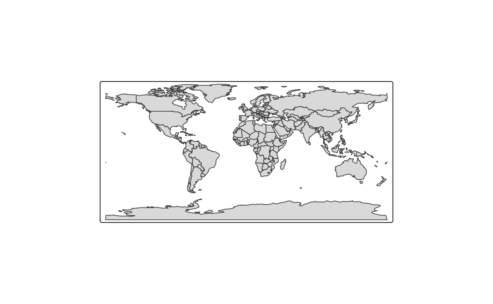
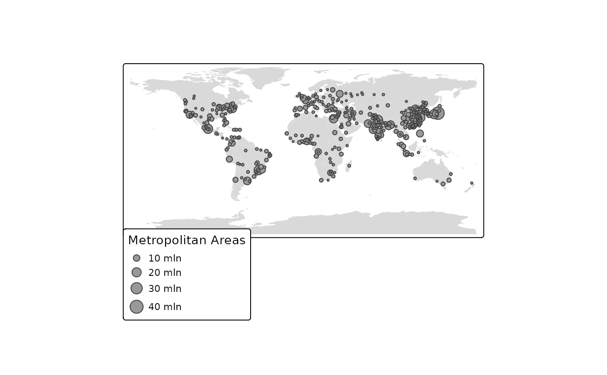
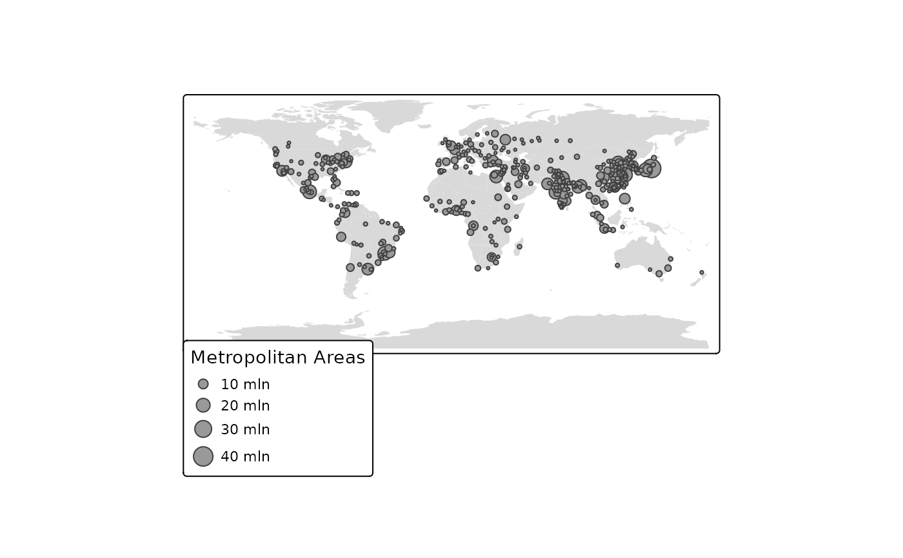

Draw a thematic map quickly. This function is a convenient wrapper of the main
plotting method of stacking tmap-elements. Without arguments or with a
search term, this functions draws an interactive map.
Usage
qtm(
shp = NULL,
fill = tm_const(),
col = tm_const(),
size = tm_const(),
shape = tm_const(),
lwd = tm_const(),
lty = tm_const(),
fill_alpha = tm_const(),
col_alpha = tm_const(),
text = tm_const(),
text_col = tm_const(),
text_size = tm_const(),
by = NULL,
scale = NULL,
title = NULL,
crs = NULL,
bbox = NULL,
basemaps = NA,
overlays = NA,
zindex = NA,
group = NA,
group.control = "check",
style = NULL,
format = NULL,
...
)Arguments
- shp
One of:
shape object, which is an object from a class defined by the
sforstarspackage. Objects from the packagesspandrasterare also supported, but discouraged.Not specified, i.e.
qtm()is executed. In this case a plain interactive map is shown.An OpenStreetMap search string, e.g.
qtm("Amsterdam"). In this case a plain interactive map is shown positioned according to the results of the search query (from OpenStreetMap nominatim)
- fill, col, size, shape, lwd, lty, fill_alpha, col_alpha
Visual variables.
- text, text_col, text_size
Visual variables.
- by
data variable name by which the data is split, or a vector of two variable names to split the data by two variables (where the first is used for the rows and the second for the columns). See also
tm_facets().- scale
numeric value that serves as the global scale parameter. All font sizes, symbol sizes, border widths, and line widths are controlled by this value. The parameters
symbols.size,text.size, andlines.lwdcan be scaled separately with respectivelysymbols.scale,text.scale, andlines.scale. See also....- title
main title. For legend titles, use
X.legend, where X is the layer name (see...).- crs
Either a
crsobject or a character value (PROJ.4character string). By default, the projection is used that is defined in theshpobject itself.- bbox
bounding box. Argument passed on to
tm_shape()- basemaps
name(s) of the provider or an URL of a tiled basemap. It is a shortcut to
tm_basemap(). Set toNULLto disable basemaps. By default, it is set to the tmap optionbasemaps.- overlays
name(s) of the provider or an URL of a tiled overlay map. It is a shortcut to
tm_tiles().- zindex
zindex
- group
group
- group.control
group.control
- style
Layout options (see
tm_layout()) that define the style. Seetmap_style()for details.- format
Deprecated, see
tm_format()for alternatives- ...
arguments associated with the visual variables are passed on to the layer functions
tm_polygons(),tm_lines(),tm_symbols(), andtm_text(). For instance,fill.scaleis the scale specifications of the fill color of polygons (seetm_polygons()).
Details
The first argument is a shape object (normally specified by tm_shape()).
The next arguments, from fill to raster, are the aesthetics from the main
layers. The remaining arguments are related to the map layout. Any argument
from any main layer function, such as tm_polygons(), can be specified (see ...).
It is also possible to stack tmap-elements on a qtm plot. See examples.
By default, a scale bar is shown. This option can be set with tmap_options()
(argument qtm.scalebar). A minimap is shown by default when qtm is called
without arguments of with a search term. This option can be set with tmap_options()
(argument qtm.minimap).
References
Tennekes, M., 2018, tmap: Thematic Maps in R, Journal of Statistical Software, 84(6), 1-39, doi:10.18637/jss.v084.i06
Examples
data(World, World_rivers, metro)
# just the map
qtm(World)
#> [tip] Consider a suitable map projection, e.g. by adding `+ tm_crs("auto")`.
#> This message is displayed once per session.

# choropleth
qtm(World, fill = "economy", style = "cobalt", crs = "+proj=eck4")
 qtm(World, col = NULL) +
qtm(metro, size = "pop2010",
size.legend = tm_legend("Metropolitan Areas"))

# dot map
if (FALSE) { # \dontrun{
current.mode <- tmap_mode("view")
qtm(metro, bbox = "China")
tmap_mode(current.mode) # restore mode
} # }
if (FALSE) { # \dontrun{
# without arguments, a plain interactive map is shown (the mode is set to view)
qtm()
# search query for OpenStreetMap nominatim
qtm("Amsterdam")
} # }
qtm(World, col = NULL) +
qtm(metro, size = "pop2010",
size.legend = tm_legend("Metropolitan Areas"))

# dot map
if (FALSE) { # \dontrun{
current.mode <- tmap_mode("view")
qtm(metro, bbox = "China")
tmap_mode(current.mode) # restore mode
} # }
if (FALSE) { # \dontrun{
# without arguments, a plain interactive map is shown (the mode is set to view)
qtm()
# search query for OpenStreetMap nominatim
qtm("Amsterdam")
} # }